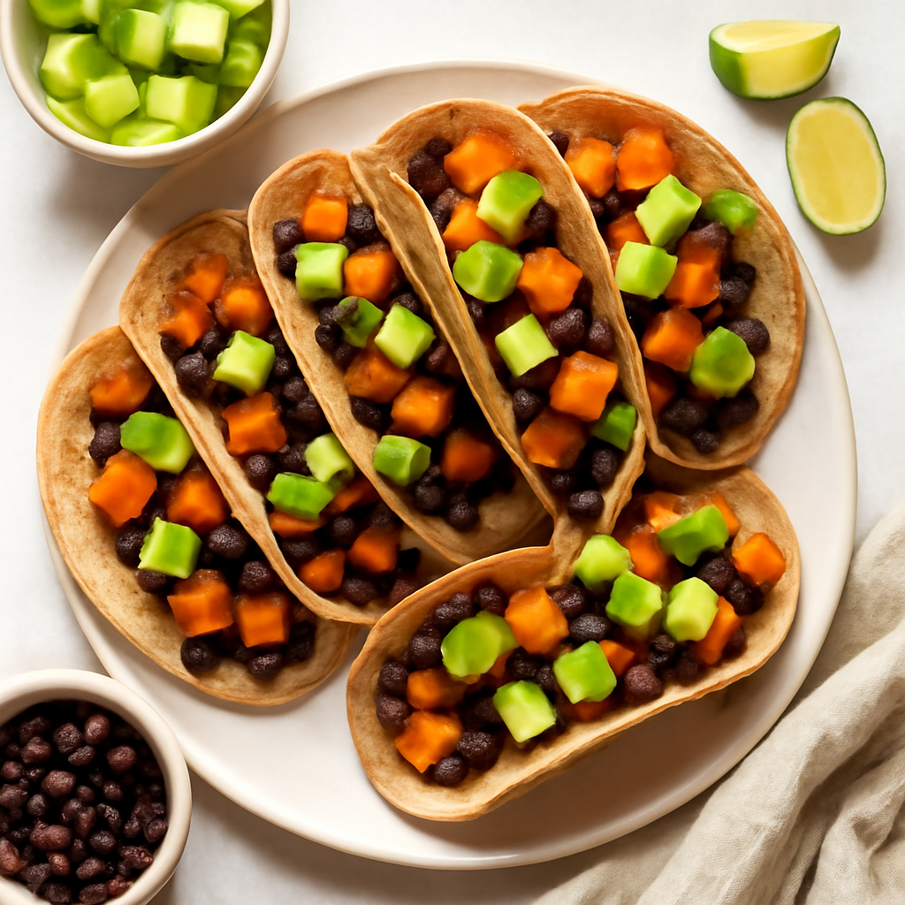

Thursday — Baked Sweet Potato and Black Bean Tacos

Cook Time:
35 minutes
Method:
Oven
Tacos
Sweet Potato
Black Beans
Ingredients for 6
6 small whole wheat tortillas
2 large sweet potatoes, diced
1 can (15 oz) black beans, drained
1 tablespoon olive oil
1 teaspoon cumin
1 teaspoon chili powder
Salt and pepper to taste
1 avocado, diced
Instructions
Preheat oven to 400°F (200°C).
Toss diced sweet potatoes with olive oil, cumin, chili powder, salt, and pepper.
Spread on a baking sheet and bake for 25 minutes until tender.
In each tortilla, fill with baked sweet potatoes and black beans, and top with diced avocado.
Toddler Notes
Ensure sweet potatoes are soft and cut into small bits.
Tortillas can be cut into quarters for easy handling.
← Back to weekly plan